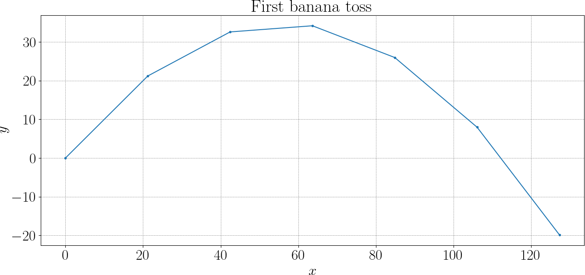

The Ape Counts Seconds
Introduction
Physics is the art of building simplified models of the world that are just accurate enough to make reliable predictions. We observe how objects move, identify the dominant effects, write down mathematical laws, and then use them to anticipate what will happen next. In this course, we will adopt exactly the same mindset, but in a virtual setting. Starting from a world we do not fully know, we will observe how bananas fly, infer the underlying rules that govern their motion, and construct a mathematical model of that world. By translating our assumptions into equations and solving them numerically, we will learn how prediction emerges from modeling, and how even a simple virtual experiment can teach us the core ideas behind scientific computing.
At the heart of many scientific models are differential equations, which describe how quantities evolve over time according to physical laws. Whether modeling projectile motion, population dynamics, heat diffusion, or fluid flow, differential equations provide a precise mathematical language for real-world phenomena. In most realistic situations, these equations cannot be solved exactly and must be approached numerically. In this course, we will learn how to discretize time, approximate derivatives, and build stable and accurate numerical solvers. Around our seemingly simple banana-launching project, we will naturally encounter and study major themes of scientific computing: numerical integration, error analysis, parameter sensitivity, optimization, and the validation of models against observations.
First throw
Let us consider a very simple 1D problem: starting from the origin \(x = 0\), we are heading to the right with some speed \(v\). A very natural first question is: where will I be after one second? If the speed were constant, the answer would be simple: position is just “speed times time.”
Let us apply the reasoning to our gorillas. Place the gorilla at the origin \((0,0)\), and imagine that it tosses a banana with some known initial speed and direction. In two dimensions, this motion naturally splits into two independent directions. The horizontal motion only depends on the horizontal component of the velocity, while the vertical motion depends on the vertical component. This separation is important: gravity affects only the vertical direction, leaving the horizontal motion unchanged.
With this in mind, we can describe the motion step by step. Over the first second, the projectile moves according to its initial velocity. Then gravity slightly reduces the vertical velocity. Over the next second, the projectile again moves using this updated velocity, and so on. By repeating this simple reasoning we build the entire trajectory as a sequence of points in time.
import numpy as np
g = -9.81 # gravity, m/s^2
speed = 30 # initial speed (m/s)
angle = 45 # launch angle in degrees
x, y = 0, 0 # current state
vx, vy = speed * np.cos(angle * np.pi/180), \
speed * np.sin(angle * np.pi/180)
dt = 1
while y >= 0:
x += dt * vx
y += dt * vy
vy += g * dt

Deliverables
- Plot of \(y(x)\)